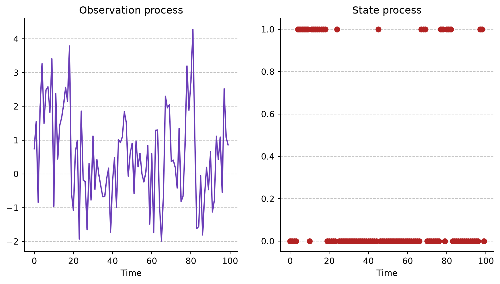

Hidden Markov Models (HMMs) are a special type of state-space model in which the observed process depends on an underlying, unobserved (hidden) Markov chain. They were introduced in the late 1960s by Leonard Baum and colleagues at the Institute for Defense Analyses, originally under the name “probabilistic functions of Markov chains” — the term “Hidden Markov Model” came later. The framework stayed largely within engineering circles until the 1980s, when researchers at Bell Labs, most notably Lawrence Rabiner, built on it to create the first practical speech recognition systems; Rabiner’s widely cited 1989 tutorial is what carried HMMs well beyond speech processing. Since then they have become a standard tool in bioinformatics, finance, ecology, and the social sciences, wherever a sequence of observations is thought to arise from an unobserved process switching between a small number of discrete states.
An HMM is a state-space model with an observation process \(\{Y_{t}\}\) and a state process \(\{C_{t}\}\) that takes values in a finite set of states \(\{1, ..., m\}\)(Zucchini, MacDonald, and Langrock 2016).
Regarding the state process, it is assumed to satisfy the Markov property:
That is, the probability of \(C_{t}\) conditional on the whole history of the process is equivalent to the probability conditional only on the most recent value, \(C_{t-1}\).
It is also assumed that the observation process is conditionally independent of past values of both the state and observation processes, and depends only on the current value of the state process, \(C_t\):
As an example, consider a two-state HMM in wich the state process is homogeneous and stationary with transition probability matrix \(\Gamma =
\begin{pmatrix}
0.9 & 0.1 \\
0.3 & 0.7
\end{pmatrix}\). Also consider that \(Y_{t}|C_t = 1 \sim N(0, 1)\) and \(Y_{t}|C_t = 2 \sim N(2, 1)\). The following code snippet illustrates the behaviour of the state and observation processes.
import numpy as npimport matplotlib.pyplot as pltnp.random.seed(0)# Transition probability matrixGamma = np.array([[0.9, 0.1], [0.3, 0.7]])# Define the m =2states = np.arange(m)# Stationary distributionA = np.vstack([(Gamma.T - np.eye(m))[:-1], np.ones(m)])b = np.zeros(m); b[-1] =1delta = np.linalg.solve(A, b)# Observaton process parametersmu = np.array([0, 2])sigma = np.array([1, 1])# Arrays for the resultsT =100C = np.zeros(T, dtype=int)Y = np.zeros(T)# Initial valuesC[0] = np.random.choice(states, p=delta)Y[0] = np.random.normal(loc=mu[C[0]], scale=sigma[C[0]])for t inrange(1, T):# We choose C[t] = np.random.choice(states, p=Gamma[C[t-1]]) Y[t] = np.random.normal(loc=mu[C[t]], scale=sigma[C[t]])# Plotsfig, ax = plt.subplots(ncols=2, figsize=(10,5))ax[0].plot(np.arange(T), Y, color='#6B3EB8') # Observation processax[0].set_title("Observation process")ax[1].scatter(np.arange(T), C, c='firebrick') # State processax[1].set_title("State process")for i inrange(2): ax[i].spines["top"].set_visible(False) ax[i].spines["right"].set_visible(False) ax[i].grid(True, axis='y', linestyle='--', alpha=0.7) ax[i].set_axisbelow(True) ax[i].set_xlabel("Time")

Likelihood
For observed data \(y_1, ..., y_T\), we want to compute the likelihood \(L_T\) — the probability of these particular observations arising from an \(m\)-state HMM with initial distribution \(\delta\) and transition probability matrix \(\Gamma\).
To express \(L_T\) compactly, for each observation \(y_t\) we define an associated \(m \times m\) diagonal matrix whose \(i\text{-th}\) entry is the density (or probability) of \(y_t\) under state \(i = 1, ..., m\):
Given known values of \(\boldsymbol{\delta}\) and \(\boldsymbol{\Gamma}\) (and the state-dependent distributions), we can compute the likelihood recursively — an approach known as the “forward algorithm”. This algorithm is useful because it allows us to avoid computing all \(m^{T}\) possible trajectories.
First, we define \(\boldsymbol{\alpha}_t\) as the partial matrix product of the likelihood up to time \(t\),
Finally, the likelihood is recovered by summing over the \(m\) possible states at time \(T\),
\[L_T = \boldsymbol{\alpha}_{T}\mathbf{1}'\]
Rather than expanding the full matrix product at once, the forward algorithm updates a single \(1 \times m\) vector \(\boldsymbol{\alpha}_t\) at each point in time. This reduces the computational cost of evaluating the likelihood from \(O(m^T)\) to \(O(Tm^2)\).
In the previous code snippet, the likelihood came out to be practically zero. (Zucchini, MacDonald, and Langrock 2016) explains that this happens because the likelihood is a product of matrices so the elements of \(L_T\) tend to zero as \(t\) grows larger for discrete state-dependent distributions, or possibly to infinity for continuous ones — exhibiting underflow or overflow, respectively. Moreover, since we are dealing with matrices rather than scalars, we cannot simply compute the log-likelihood as the sum of the logs of its factors.
To overcome this, we can scale the likelihood by scaling \(\boldsymbol{\alpha}\). To illustrate this, consider a stationary and homogeneous m-state HMM and define for \(t=0, 1, ..., T\) the vector
with \(\boldsymbol{\phi}_0 = \boldsymbol{\delta}\) and \(w_0 = 1\). Since \(\boldsymbol{\phi}_t\) is normalized to sum to 1, \(w_t\) can be recovered recursively as
Because \(L_T = w_T\), the log-likelihood is now a sum of scalars instead of a product of matrices,
\[\log L_T = \sum_{t=1}^{T}\log(w_t/w_{t-1})\]
At each step, we normalize \(\boldsymbol{\alpha}_t\) to obtain \(\boldsymbol{\phi}_t\), and accumulate the scaling factor \(w_t\) on the log scale — avoiding underflow entirely.
In addition to underflow or overflow when computing the likelihood, computational problems can also arise when maximizing it — namely, slow convergence under constrained optimization, and the presence of multiple maxima in the likelihood surface.
Parameter constraints appear, for example, in \(\boldsymbol{\Gamma}\), since each row must sum to \(1\) and every entry must be non-negative; they can also appear in the parameters of the state-dependent distributions (e.g., when a parameter can only take positive values). To avoid implementing these constraints directly, we can make use of reparametrization.
For the state-dependent distributions, the nature of the restriction indicates what kind of reparametrization we can use. For example, if the parameters \(\boldsymbol{\theta}\) are positive, we can define \(\boldsymbol{\theta}_{\log} = \log(\boldsymbol{\theta})\), maximize the likelihood with respect to \(\boldsymbol{\theta}_{\log}\) to obtain \(\hat{\boldsymbol{\theta}}_{\log}\), and then recover the original parameters by transforming back with \(\hat{\boldsymbol{\theta}} = \exp(\hat{\boldsymbol{\theta}}_{\log})\). Similarly, when the parameters take values in the interval \((0,1)\), we can make use of the logit function instead.
The transition probability matrix \(\boldsymbol{\Gamma}\) requires a different treatment, since its constraint is not on individual entries but on entire rows: although \(\boldsymbol{\Gamma}\) has \(m^2\) entries, it has only \(m(m-1)\) free parameters, because each row must sum to \(1\). We call the unconstrained parameters \(\tau_{ij}\) (for \(i \neq j\)) the working parameters, and the entries \(\gamma_{ij}\) of \(\boldsymbol{\Gamma}\) the natural parameters — the same terminology applies to \(\log(\boldsymbol{\theta})\) versus \(\boldsymbol{\theta}\) in the previous case.
To go from working to natural parameters, define \[\nu_{ij} = \begin{cases} \exp(\tau_{ij}) & i \neq j \\ 1 & i = j \end{cases}\]
and normalize each row so it sums to \(1\), \[\gamma_{ij} = \nu_{ij} \Big/ \sum_{k=1}^{m}\nu_{ik}\]
Since every \(\nu_{ij} > 0\), this normalization guarantees \(\gamma_{ij} \in (0,1)\) and \(\sum_j \gamma_{ij} = 1\) automatically — the t.p.m. constraints are satisfied by construction, without ever having to impose them explicitly during optimization. Explicitly, for \(i \neq j\), \[\gamma_{ij} = \frac{\exp(\tau_{ij})}{1 + \sum_{k \neq i}\exp(\tau_{ik})}\]
To go in the opposite direction — recovering working parameters from an already-known \(\boldsymbol{\Gamma}\) — we invert the transformation, \[\tau_{ij} = \log(\gamma_{ij}/\gamma_{ii}), \quad i \neq j\]
As before, estimation proceeds in two steps: (1) maximize \(L_T\) with respect to the unconstrained working parameters — \(\{\tau_{ij}\}\), together with any other reparametrized parameters such as \(\log\sigma_i\) — and (2) transform the resulting estimates back to the natural parameters \(\hat{\boldsymbol{\Gamma}}\).
Real Gamma:
[[0.9 0.1]
[0.3 0.7]]
Estimated Gamma:
[[0.89923613 0.10076387]
[0.3013713 0.6986287 ]]
Real mu: [0 2]
Estimated mu: [0.00227639 2.05126962]
Real sigma: [1 1]
Estimated sigma: [1.01930637 0.9545137 ]
Real delta: [0.75 0.25]
Estimated delta: [0.74942785 0.25057215]
Maximization of the likelihood using the Baum-Welch algorithm
One of the most used algorithms for the MLE of the parameters of an HMM when the Markov process is homogeneous but not necessary stationary is the Baum-Welch algorithm wich is a special case of the Expectation-Maximization (EM) algorithm.
The algorithm makes use of the forward probabilities \(\boldsymbol{\alpha}_{t}\) wich are
Noting that the sequence of states of the Markov process of an HMM is not observed, we can treat those states as missing data and therefore use te EM algorithm, an algorithm useful in situations like this one.
An informal way to describe the EM algorithm is that you start by choosing starting values of \(\boldsymbol{\theta}\) and then repeat the E-step and M-step until some converfence criterion is reached:
E-step: compute the conditional expectations of the missing data given the observations and current estimate of \(\boldsymbol{\theta}\).
E-step: Mazimize, with respect to \(\boldsymbol{\theta}\). with the functions of the missing data repaced in it by their conditional expectations
One disadvantage is that convergence is guaranteed locally.
In the context of HMM, we represent the sequence of states \(c_1, c_2, ..., c_t\) as zero-one random variables as follows:
\[u_{j}=1 \text{ if and only if }c_{t}=j \text{ } (t = 1,...,T)\]
and
\[v_{jk}(t)= 1 \text{ if and only if }c_{t}=j \text{ } (t = 2,...,T)\]
With this, the log-likelihood of the observations \(y_1,...,y{T}\) and the missing data \(c_1,...,c{T}\);
This quantities are used to replace the values \(\hat{u}_{j}(t)\) and \(\hat{v}_{jk}(t)\) in the log-likelihood formula.
M-step Once replaced the values \(\hat{u}_{j}(t)\) and \(\hat{v}_{jk}(t)\) by \(\hat{u}_{j}(t)\) and \(\hat{v}_{jk}(t)\), respectively, we maximize the CDLL with respect to \(\boldsymbol{\delta}\), \(\boldsymbol{\Gamma}\) and \(\bold{p}(y)\). We note that the CDLL is a sum of three terms that do not share common terms so the maximization problem consist in maximizing three independent sums.
\(\sum_{j=1}^m\hat{u}_{j}(t)\text{ log}(\delta_{j})\) with respect to \(\boldsymbol{\delta}\);
\(\sum_{j=1}^{m} \sum_{k=1}^{m}\big(\sum_{t=2}^{T}\hat{v}_{jk}(t)\big)\text{ log}\gamma_{jk}\) with respect to \(\boldsymbol{\Gamma}\);
\(\sum_{j=1}^{m} \sum_{t=1}^{T}\hat{u}_{j}(t)\text{ log }p_j(y_t)\) with respect to the parameters of the state-dependent distributions.
The solution of this problem is:
Set \(\delta_{j} = \frac{\hat{u}_{j}(1)}{\sum_{j=1}^{m}}=\hat{u}_{j}(1)\)
Set \(\gamma_{jk} = f_{jk} \Big/ \sum_{k=1}^{m} f_{jk}\), where \(f_{jk} = \sum_{t=2}^{T} \hat v_{jk}(t)\)
The maximization of the third term depend on the structure of the state-dependent distributions.
The following code snippet is a naive implementation of the EM-algorithm applied to the example we have followed in this notebook
Zucchini, Walter, Iain L. MacDonald, and Roland Langrock. 2016. Hidden Markov Models for Time Series: An Introduction Using r. 2nd ed. Chapman; Hall/CRC. https://doi.org/10.1201/b20790.